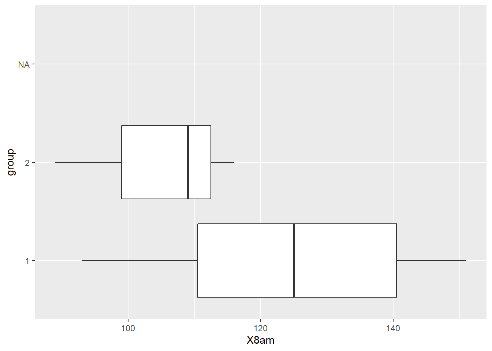
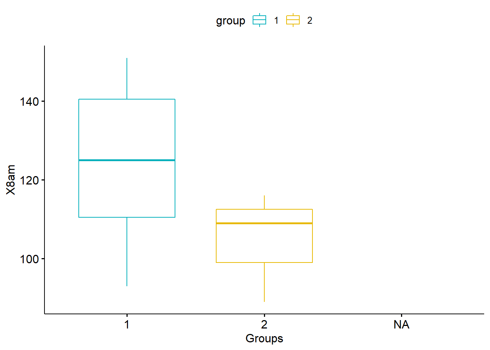

my_data <-read.csv2("plasma.csv")
my_data$group<-as.factor(my_data$group)Today we aim to perform statistical tests on the dataset we have at our disposal.
\(\huge{First \ \ step :}\)
We will see whether the concentration of citrate in plasma changes significantly over time.
Difference between 8am and 11am
\(\\\) We perform a student’s test :
test_1<-t.test(my_data$X11am-my_data$X8am)
pvalues<-test_1$p.value
mean(my_data$X11am-my_data$X8am)## [1] NAround(pvalues,3)## [1] 0.096On average, consentration increased by 9.4
At the risk of being wrong at 9.6%, the change in concentration between the two hours has significantly increased.
Difference between 11am and 3pm
\(\\\) We perform a student’s test :
test_2<-t.test(my_data$X3pm-my_data$X11am)
pvalues_2<-test_2$p.value
mean(my_data$X3pm-my_data$X11am)## [1] NAround(pvalues_2,3)## [1] 0.013On average, consentration decreased by 15.3
At the risk of being wrong at 1.3%, the change in concentration between the two hours has significantly decreased.
\(\huge{Second \ \ step :}\)
Difference between two groups
library(plyr)
library(ggplot2)GenderPlot1_FLIP = ggplot(my_data, aes(x = group, y = X8am)) + geom_boxplot() + coord_flip()
GenderPlot1_FLIP ## Warning: Removed 4 rows containing non-finite values (stat_boxplot).
Group 1 seems to have a higher average.
Let’s do a test to be sure
library("dplyr")##
## Attachement du package : 'dplyr'## Les objets suivants sont masqués depuis 'package:plyr':
##
## arrange, count, desc, failwith, id, mutate, rename, summarise,
## summarize## Les objets suivants sont masqués depuis 'package:stats':
##
## filter, lag## Les objets suivants sont masqués depuis 'package:base':
##
## intersect, setdiff, setequal, unionlibrary(dplyr)
group_by(my_data, group) %>%
summarise(
count = n(),
mean = mean(X8am, na.rm = TRUE),
sd = sd(X8am, na.rm = TRUE)
)## # A tibble: 3 x 4
## group count mean sd
## <fct> <int> <dbl> <dbl>
## 1 1 7 124. 21.1
## 2 2 3 105. 14.0
## 3 <NA> 4 NaN NAlibrary("ggpubr")##
## Attachement du package : 'ggpubr'## L'objet suivant est masqué depuis 'package:plyr':
##
## mutateggboxplot(my_data, x = "group", y = "X8am",
color = "group", palette = c("#00AFBB", "#E7B800"),
ylab = "X8am", xlab = "Groups")## Warning: Removed 4 rows containing non-finite values (stat_boxplot).
# Shapiro-Wilk normality test for Men's weights
with(my_data, shapiro.test(X8am[group == "1"]))# p = 0.8698##
## Shapiro-Wilk normality test
##
## data: X8am[group == "1"]
## W = 0.9662, p-value = 0.8698# Shapiro-Wilk normality test for Women's weights
with(my_data, shapiro.test(X8am[group == "2"])) # p = 0.4822##
## Shapiro-Wilk normality test
##
## data: X8am[group == "2"]
## W = 0.92827, p-value = 0.4822From the output, the two p-values are greater than the significance level 0.05 implying that the distribution of the data are not significantly different from the normal distribution. In other words, we can assume the normality.
res.ftest <- var.test(X8am ~ group, data = my_data)
res.ftest##
## F test to compare two variances
##
## data: X8am by group
## F = 2.2782, num df = 6, denom df = 2, p-value = 0.6722
## alternative hypothesis: true ratio of variances is not equal to 1
## 95 percent confidence interval:
## 0.05792299 16.53937046
## sample estimates:
## ratio of variances
## 2.278195The p-value of F-test is p = 0.6722. It’s greater than the significance level alpha = 0.05. In conclusion, there is no significant difference between the variances of the two sets of data. Therefore, we can use the classic t-test witch assume equality of the two variances.
res <- t.test(X8am ~ group, data = my_data, var.equal = TRUE)
res##
## Two Sample t-test
##
## data: X8am by group
## t = 1.4604, df = 8, p-value = 0.1823
## alternative hypothesis: true difference in means between group 1 and group 2 is not equal to 0
## 95 percent confidence interval:
## -11.44319 50.96700
## sample estimates:
## mean in group 1 mean in group 2
## 124.4286 104.6667The p-value of the test is 0.1823, which is above the significance level alpha = 0.05. We can conclude that the average concentration of group 1 is not significantly different from the average concentration of group 2 by one value. This is due to the fact that there is not enough data.